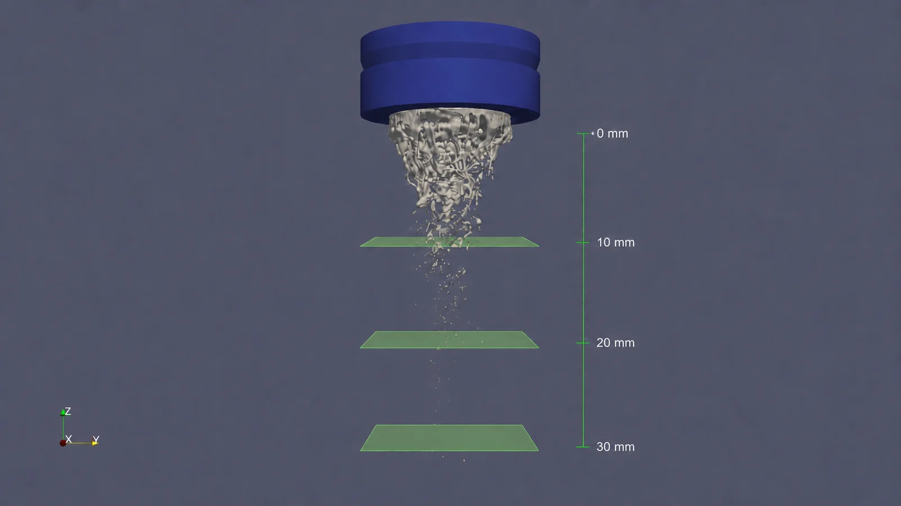

01 Situation
Metal powder starts as a spray
Metal 3D printing needs fine, uniform powder. That powder is made by gas atomization: a high-speed gas jet tears a stream of molten metal into droplets, which cool into particles.
Simulating this takes two models. Close to the nozzle, a detailed but expensive model (Volume-of-Fluid) resolves the metal stream as it breaks apart. Further down, a cheaper model treats each droplet as a point. A transition plane is where one hands over to the other.
